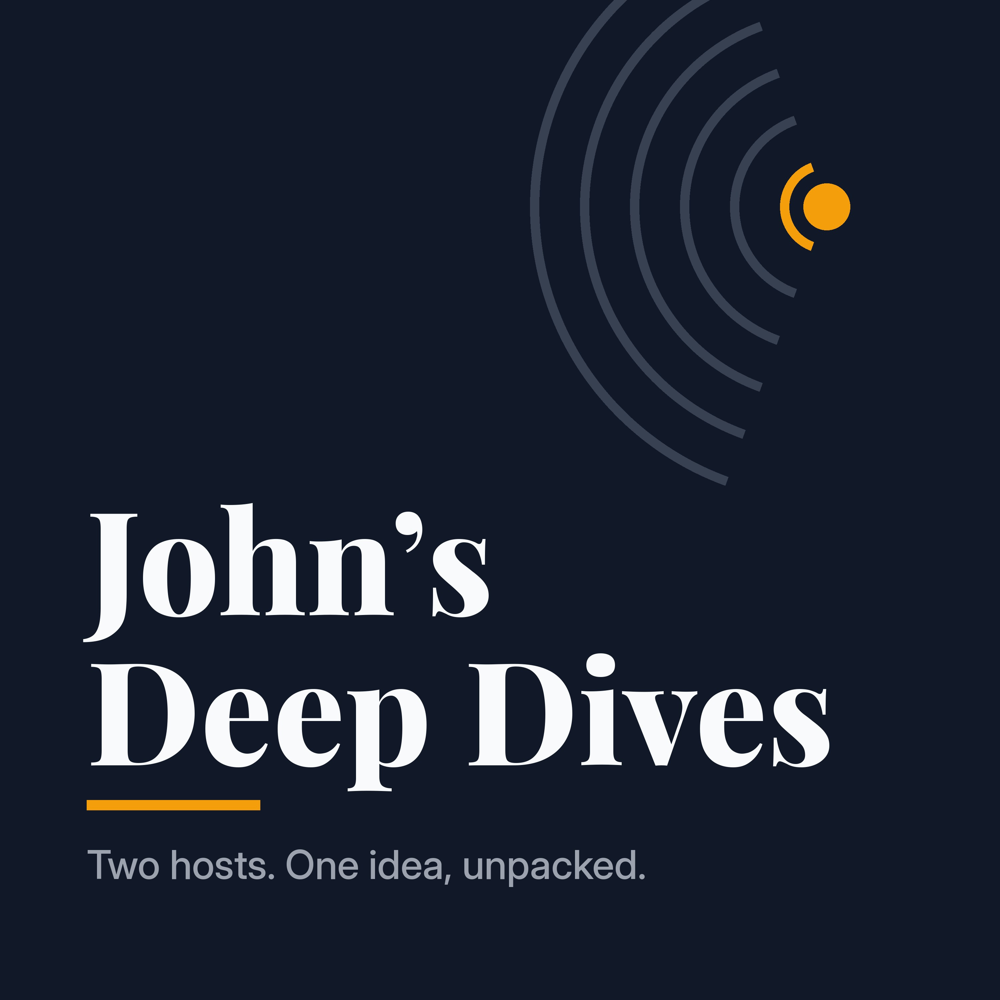

John's Deep Dives
Private AI-generated two-host audio walkthroughs of knowledge graphs and articles.
Podcast feed URL
One tap on iPhone, iPad or Mac
Open in Apple PodcastsWorks on Apple devices with the Podcasts app. If nothing happens, use the steps below.
Apple Podcasts on iPhone or iPad
- Copy the feed URL above.
- Open the Podcasts app and tap Library.
- Tap the More (…) button at the top.
- Tap Follow a Show by URL…
- Paste the URL and tap Follow.
Apple Podcasts on Mac
- Copy the feed URL above.
- Open the Podcasts app.
- In the menu bar, choose File > Follow a Show by URL…
- Paste the URL and click Follow.
Other podcast apps
Most apps that accept a feed URL work too. In Overcast, tap + and choose Add URL. In Pocket Casts, paste the URL into the search box. Some apps, such as Spotify, don't support private feeds.
Episodes
Loading episodes…